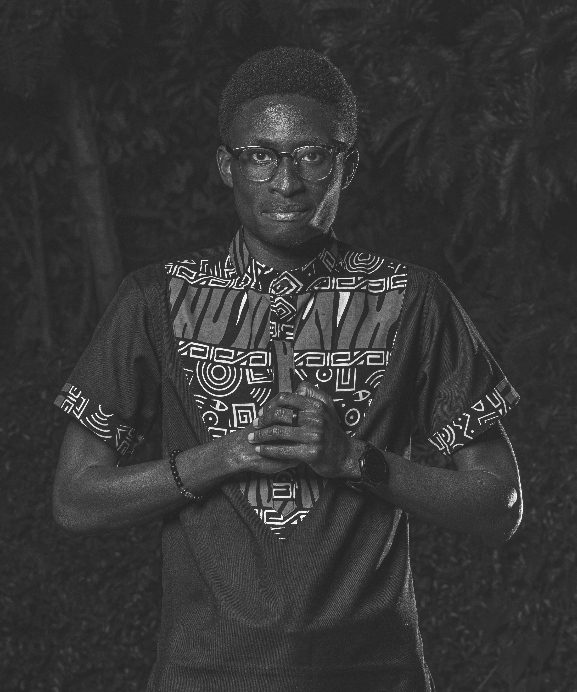

About Me

Hello there!
➤ I am a highly organized and assertive individual with excellent communication and interpersonal
skills, time
conscious and capable of initiating and accomplishing tasks individually, and as a team player with
recognition
of diversity in teams
➤ I visualize & bring to life marketing materials, campaigns
and proposals.
View Resume
Download Portfolio
Skills
-
Adobe Suit Software
- Adobe Photoshop
- Adobe Illustrator
- Adobe InDesign
- Adobe XD
- Adobe After Effects
-
Microsoft Office Suite
- Word
- Excel
- PowerPoint
- Outlook
Work Experience
Design Manager,
Hallmark
Advertising & Marketing East Africa
March 2021 - Present
-
Full time Graphic Designer handling various clients within the East African Market.
-
I design all communication materials, advertising proposals & campaigns across Kenya, Uganda
& Rwanda.
-
Sit with the marketing team for marketing campaign ideation and creation of KVs.
-
Create marketing proposal documents and report templates.
-
I lead a team of two people (Junior Designers) & work remotely most of the time
Creative Consultant,
Daraja Plus Digital Marketing Company
2019 - Feb 2021
-
Worked as a consulatant for their clients at the time, specifically Weetabix, UNGA
limited and Unilever (Omo Sunlight).
-
Worked on content calendars for digital marketing content.
-
Sat with marketing team for digital campaing ideation and post creation.
-
Worked closely with the digital marketing team to ensure success in the various
digital campaigns.
Founder, Frikan Art
2019 - Present
-
I do art illustrations and work on different design projects under my personal brand.
-
Did design work and online Marketing for Ground Force Security Services Ltd.
Delivery Person, Quentine Catering
Jan 2018 - June 2018
-
Service and office food deliver within Nairobi CBD.
Volunteer, Mamlaka Hill Chapel
2017 - Present
-
Teens mentor.
-
Youth ministry Graphic Designer.
-
Video editing and social media content creation
Education
The University of Nairobi
-
Bachelor of Arts Degree in Pyschology, Religious Studies and Sociology
Zalego Institute of Technology & Innovation
-
Programming, web and advanced web design
The Highway Secondary School
-
Kenya Certificate of Secondary Education
State House Primary
-
Kenya Certificate of Primary Education
Contact
To inquire about my services, please contact me via:
I look forward to connecting with you and discussing how I
can contribute to your projects and goals.